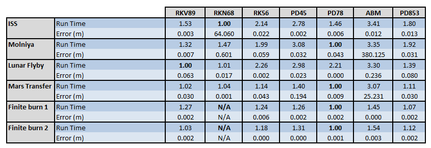
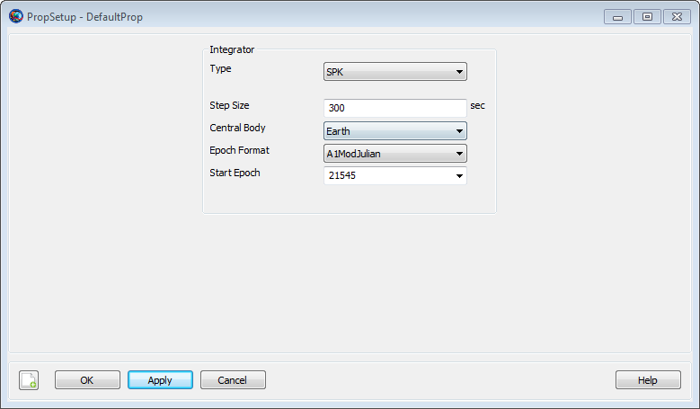
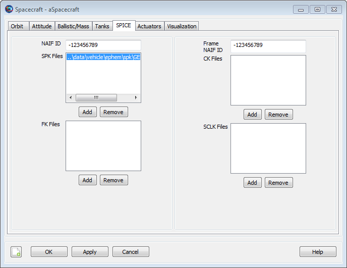
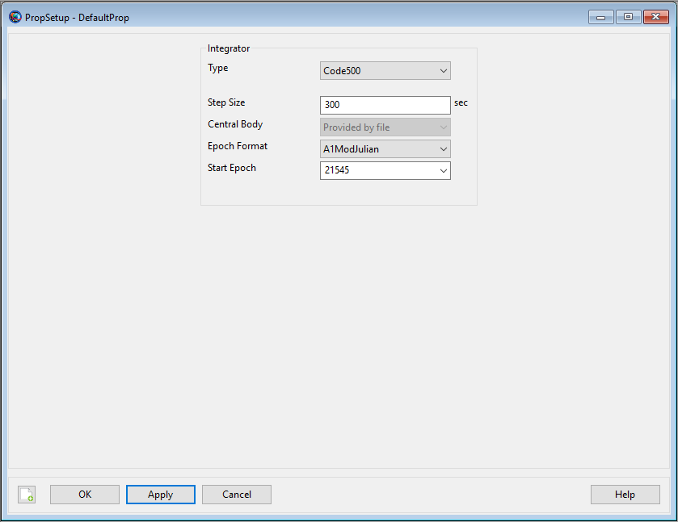
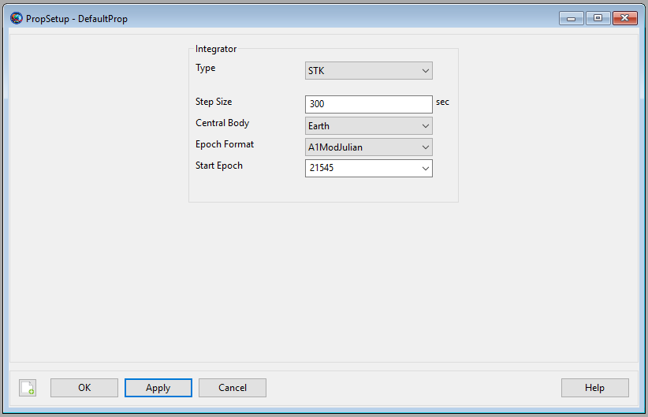
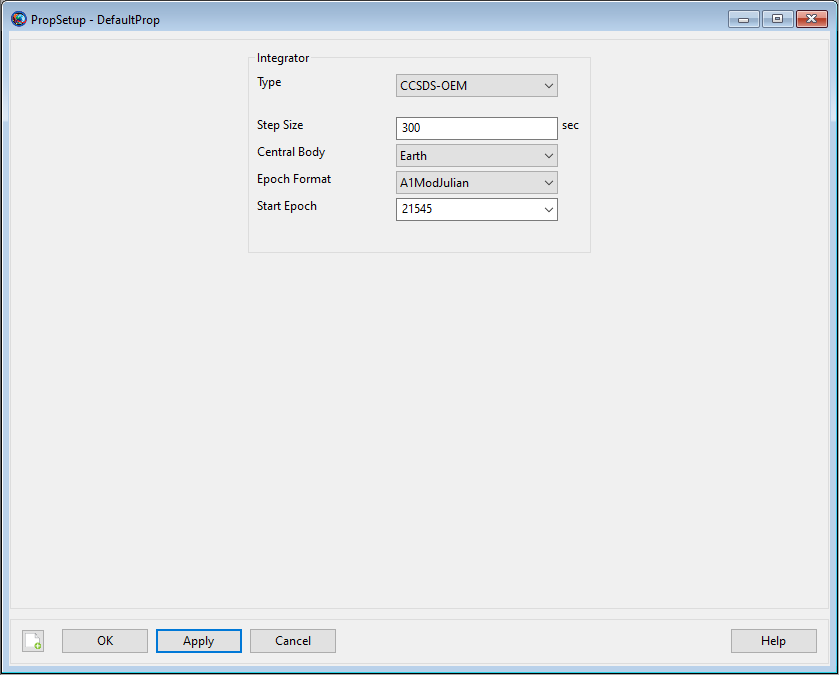

Propagator — A propagator models spacecraft motion
A Propagator is the GMAT component used to
model spacecraft motion. GMAT contains two types of propagators: a
numerical integrator type, and an ephemeris type. When using a numerical
integrator type Propagator, you can choose among a
suite of numerical integrators implementing Runge-Kutta and predictor
corrector methods. Numeric Propagators also require a
ForceModel. Additionally, you can configure a
Propagator to use SPICE kernels, and Code500, STK,
and CCSDS ephemeris files for propagation. This resource cannot be
modified in the Mission Sequence. However, you can set one
Propagator equal to another
Propagator in the mission,( i.e.
myPropagator = yourPropagator ).
GMAT's documentation for Propagator components is broken down into these sections:
For numerical Propagator documentation see Numerical Propagator
For SPICE Propagator documentation see SPK-Configured Propagator
For Code500 ephemeris Propagator documentation see Code500 Ephemeris-Configured Propagator
For STK ephemeris Propagator documentation see STK Ephemeris-Configured Propagator
For CCSDS OEM ephemeris Propagator documentation see CCSDS OEM Ephemeris-Configured Propagator
For TLE Propagator documentation see SPICESGP4 TLE Propagator
See Also: Spacecraft and Propagate. For special considerations regarding configuration of propagators for orbit determination, see Configuration of Propagators for Orbit Determination.
A Propagator object that uses a numerical
integrator (as opposed to an ephemeris propagator) is one of a few
objects in GMAT that is configured differently in the scripting and in
the GUI. In the GUI, you configure the integrator and force model
setting on the same dialog box. See the Remarks section
below for detailed discussion of GMAT’s numerical integrators as well as
performance and accuracy comparisons, and usage recommendations. This
resource cannot be modified in the Mission Sequence. However, you can do
whole object assignment in the mission,( i.e. myPropagator =
yourPropagator ).
When working in the script, you must create a ForceModel object separately from the Propagator and specify the force model using the “FM” field on the propagator object. See the Examples section later in this section for details.
| Option | Description | ||||||||||||
|---|---|---|---|---|---|---|---|---|---|---|---|---|---|
| Accuracy | The desired accuracy for an integration step. GMAT uses the method selected in the field on the Force Model to determine a metric of the integration accuracy. For each step, the integrator ensures that the error in accuracy is smaller than the value defined by the metric.
| ||||||||||||
| FM | Identifies the force model used by an integrator. If no force model is provided, GMAT uses an Earth centered propagator with a 4x4 gravity model.
| ||||||||||||
| InitialStepSize | The size of the first step attempted by the integrator. Warning: The order of assignment of propagator parameters affects the results. Specifically, the Type must be specified before InitialStepSize, or InitialStepSize will reset back to the default value.
| ||||||||||||
| LowerError | The lower bound on integration error, used to determine when to make the step size larger. Applies only to AdamsBashforthMoulton integrator.
| ||||||||||||
| MaxStep | The maximum allowable step size.
| ||||||||||||
| MaxStepAttempts | The number of attempts the integrator takes to meet the tolerance defined by the field.
| ||||||||||||
| MinStep | The minimum allowable step size.
| ||||||||||||
| StopIfAccuracyIsViolated | Flag to stop propagation if integration error value defined by Accuracy is not satisfied.
| ||||||||||||
| TargetError | The nominal bound on integration error, used to set the target integration accuracy when adjusting step size. Applies only to AdamsBashforthMoulton integrator.
| ||||||||||||
| Type | Specifies the integrator or analytic propagator used to model the time evolution of spacecraft motion. Warning: The order of assignment of propagator parameters affects the results. Specifically, the Type must be specified before InitialStepSize, or InitialStepSize will reset back to the default value.
|
The comparison data presented in a later section suggest that the PrinceDormand78 integrator is the best all purpose integrator in GMAT. When in doubt, use the PrinceDormand78 integrator, and set MinStep to zero so that the integrator’s adaptive step algorithm controls the minimum integration step size. Below are some important comments on GMAT’s step size control algorithms and the dangers of using a non-zero value for the minimum integration step size. The AdamsBashforthMoulton integrator is a low order integrator and we only recommend its use for low precision analysis when a predictor-corrector algorithm is required. We recommend that you study the performance and accuracy analysis documented later in this section to select a numerical integrator for your application. You may need to perform further analysis and comparisons for your application.
Caution: GMAT’s default error computation mode is RSSStep and this is a more stringent error control method than RSSState that is often used as the default in other software such as STK. If you set Accuracy to a very small number, 1e-13 for example, and leave ErrorControl set to RSSStep, integrator performance will be poor, for little if any improvement in the accuracy of the orbit integration. To find the best balance between integration accuracy and performance, we recommend you experiment with the accuracy setting for your selected integrator for your application. You can start with a relatively high setting of Accuracy, say 1e-9, and lower the accuracy by an order of magnitude at a time and compare the final orbital states to determine where smaller values of Accuracy result in longer propagation times without providing more accurate orbital solutions.
Caution: GMAT allows you to set a minimum step on numerical integrators. It is possible that the requested Accuracy cannot be achieved given the MinimumStep setting. The Propagator flag StopIfAccuracyIsViolated determines the behavior if Accuracy cannot be satisfied. If StopIfAccuracyIsViolated is true, GMAT will throw an error and stop execution if integration accuracy is not satisfied. If StopIfAccuracyIsViolated is false, GMAT will only throw a warning that the integration accuracy was not satisfied but will continue to propagate the orbit.
The table below describes each numerical integrator in detail.
| Option | Description |
|---|---|
| RungeKutta89 | An adaptive step, ninth order Runge-Kutta integrator with eighth order error control. The coefficients were derived by J. Verner. Verner developed several sets of coefficients for an 89 integrator and we have chosen the coefficients that are the most robust but not necessarily the most efficient. |
| PrinceDormand78 | An adaptive step, eighth order Runge-Kutta integrator with seventh order error control. The coefficients were derived by Prince and Dormand. |
| PrinceDormand853 | An adaptive step, eighth order Runge-Kutta integrator with 5th order error control that incorporates a 3rd order correction, as described in section II.10 of "Solving Ordinary Differential Equations I: Nonstiff Problems" by Hairer, Norsett and Warner. The coefficients were derived by Prince and Dormand. This integrator performs surprisingly well at loose Accuracy settings. |
| PrinceDormand45 | An adaptive step, fifth order Runge-Kutta integrator with fourth order error control. The coefficients were derived by Prince and Dormand. |
| RungeKutta68 | A second order Runge-Kutta-Nystrom type integrator with coefficients developed by by Dormand, El-Mikkawy and Prince. The integrator is a 9-stage Nystrom integrator, with error control on both the dependent variables and their derivatives. This second order implementation will correctly integrate forces that are non-conservative but it is not recommended for this use. See the integrator comparisons below for numerical comparisons. You cannot use this integrator to integrate mass during a finite maneuver because the mass flow rate is a first order differential equation not supported by this integrator. |
| RungeKutta56 | An adaptive step, sixth order Runge-Kutta integrator with fifth order error control. The coefficients were derived by E. Fehlberg. |
| AdamsBashforthMoulton | A fourth-order Adams-Bashford predictor / Adams-Moulton corrector as described in Fundamentals of Astrodynamics by Bate, Mueller, and White. The predictor step extrapolates the next state of the variables using the the derivative information at the current state and three previous states of the variables. The corrector uses derivative information evaluated for this state, along with the derivative information at the original state and two preceding states, to tune this state, giving the final, corrected state. The ABM integrator uses the RungeKutta89 integrator to start the integration process. The ABM is a low order integrator and should not be used for precise applications or for highly nonlinear applications such as celestial body flybys. |
The tables below contain performance comparison data for GMAT's numerical integrators. The first table shows the orbit types, dynamics models, and propagation duration for each test case included in the comparison. Five orbit types were compared: low earth orbit, Molniya, Mars transfer (Type 2), Lunar transfer, and finite burn (case 1 is blow down, and case 2 is pressure regulated). For each test case, the orbit was propagated forward for a duration and then back-propagated to the intial epoch. The error values in the table are the RSS difference of the final position after forward and backward propagation to the initial position. The run time data for each orbit type is normalized on the integrator with the fastest run time for that orbit type. For all test cases the ErrorControl setting was set to RSSStep. Accuracy was set to 1e-12 for all integrators except for AdamsBashfourthMoulton which was set to 1e-11 because of poor performance when Accuracy was set to 1e-12.
| Orbit | Dynamics Model | Duration |
|---|---|---|
| LEO | Earth 20x20, Sun, Moon, drag using MSISE90 density, SRP | 1 day |
| Molniya | Earth 20x20, Sun, Moon, drag using Jacchia Roberts density, SRP | 3 days |
| Mars Transfer | Near Earth: Earth 8x8, Sun, Moon, SRP Deep Space: All planets as point mass perturbations Near Mars: Mars 8x8 SRP | 333 days |
| Lunar Transfer | Earth central body with all planets as point mass perturbations | 5.8 days |
| Finite Burn (case 1 and 2) | Point mass gravity | 7200 sec. |
Comparing the run time data for each integrator shown in the table below we see that the PrinceDormand78 integrator was the fastest for 4 of the 6 cases and tied with the RungeKutta89 integrator for LEO test case. For the Lunar flyby case, the RungeKutta89 was the fastest integrator, however, in this case the PrinceDormand78 integrator was at least 2 orders of magnitude more accurate given equivalent Accuracy settings. Notice that the AdamsBashforthMoulton integrator has km level errors for some orbits because it is a low-order integrator.
 |
The AdamsBashforthMoulton integrator has two additional fields named TargetError and LowerError that are only active when Type is set to AdamsBashforthMoulton. If you are using another integrator type, those fields must be removed from your script file to avoid parsing errors. When working in the GUI, this is performed automatically. See examples below for more details.
Propagate an orbit using a general purpose Runge-Kutta integrator:
Create Spacecraft aSat
Create ForceModel aForceModel
Create Propagator aProp
aProp.FM = aForceModel
aProp.Type = PrinceDormand78
aProp.InitialStepSize = 60
aProp.Accuracy = 1e-011
aProp.MinStep = 0
aProp.MaxStep = 86400
aProp.MaxStepAttempts = 50
aProp.StopIfAccuracyIsViolated = true
BeginMissionSequence
Propagate aProp(aSat) {aSat.ElapsedDays = .2}Propagate using a fixed step configuration. Do this by setting InitialStepSize to the desired fixed step size and setting ErrorControl to None. This example propagates in constant steps of 30 seconds:
Create Spacecraft aSat
Create ForceModel aForceModel
aForceModel.ErrorControl = None
Create Propagator aProp
aProp.FM = aForceModel
aProp.Type = PrinceDormand78
aProp.InitialStepSize = 30
BeginMissionSequence
Propagate aProp(aSat) {aSat.ElapsedDays = .2}Propagate an orbit using an Adams-Bashforth-Moulton predictor-corrector integrator:
Create Spacecraft aSat
Create ForceModel aForceModel
aForceModel.ErrorControl = RSSStep
Create Propagator aProp
aProp.FM = aForceModel
aProp.Type = AdamsBashforthMoulton
aProp.InitialStepSize = 60
aProp.MinStep = 0
aProp.MaxStep = 86400
aProp.MaxStepAttempts = 50
% Note the following fields must be set with decreasing values!
aProp.Accuracy = 1e-010
aProp.TargetError = 1e-011
aProp.LowerError = 1e-013
aProp.StopIfAccuracyIsViolated = true
BeginMissionSequence
Propagate aProp(aSat) {aSat.ElapsedDays = .2}An SPK-configured Propagator propagates a
spacecraft by interpolating user-provided SPICE kernels. You configure a
Propagator to use an SPK kernel by setting the
Type field to SPK. SPK kernels
and the NAIFId are defined on the
Spacecraft Resource. You control propagation,
including stopping conditions, using the Propagate
command. This resource cannot be modified in the Mission Sequence.
However, you can do whole object assignment in the mission,( i.e.
myPropagator = yourPropagator ).
See Also: Spacecraft, Propagate
| Field | Description | ||||||||||||
|---|---|---|---|---|---|---|---|---|---|---|---|---|---|
| CentralBody | The central body of propagation. This field has no effect for SPK, Code500, CCSDS-OEM, or STK propagators.
| ||||||||||||
| EpochFormat | Only used for an SPK, Code500, CCSDS-OEM, or STK propagator. The format of the epoch contained in the StartEpoch field.
| ||||||||||||
| StartEpoch | Only used for an SPK, Code500, CCSDS-OEM, or STK propagator. The initial epoch of propagation. When an epoch is provided that epoch is used as the initial epoch. When the keyword "FromSpacecraft" is provided, the start epoch is inherited from the spacecraft. If this parameter is omitted or set to "EphemStart", propagation will begin at the start of the ephemeris file.
| ||||||||||||
| StepSize | The step size for an SPK, Code500, CCSDS-OEM, or STK Propagator.
| ||||||||||||
| Type | Specifies the integrator or analytic propagator used to model time evolution of spacecraft motion. Specify SPK for an SPK file ephemeris propagator.
|
 |
To configure a Propagator to use SPK files,
on the Propagator dialog box, select
SPK in the Type menu. There
are four fields you can configure for an SPK propagator including
StepSize, CentralBody,
EpochFormat, and StartEpoch.
Note that changing the EpochFormat setting converts
the input epoch to the selected format. You can also type
FromSpacecraft into the
StartEpoch field and the
Propagator will use the epoch of the
Spacecraft as the initial propagation epoch.
To use an SPK-configured Propagator, you must specify the SPK kernels and NAIFId on the Spacecraft, configure a Propagator to use SPK files as opposed to numerical methods, and configure the Propagate command to use the configured SPK propagator. The subsections and examples below discuss each of these items in detail.
To use an SPK-configured Propagator, you must add the SPK kernels to the Spacecraft and define the spacecraft's NAIFId. SPK Kernels for selected spacecraft are available here. Two sample vehicle spk kernels, (GEOSat.bsp and MoonTransfer.bsp) are distributed with GMAT for example purposes. An example of how to add spacecraft kernels via the script interface is shown below.
Create Spacecraft aSpacecraft
GMAT aSpacecraft.NAIFId = -123456789
GMAT aSpacecraft.OrbitSpiceKernelName = {...
'..\data\vehicle\ephem\spk\GEOSat.bsp'}To add Spacecraft SPK kernels via the GUI:
On the Spacecraft dialog box, click the SPICE tab.
Under the SPK Files list, click Add.
Browse to locate and select the desired SPK file
Repeat to add all necessary SPK kernels
In the NAIF ID field, enter the spacecraft integer NAIF id number. Note: For a given mission, each spacecraft should have a unique NAIF ID if the spacecraft are propagated with an SPK propagator.
 |
You can add more than one kernel to a spacecraft as shown via scripting below, where the files GEOSat1.bsp and GEOSat2.bsp are dummy file names used for example purposes only and are not distributed with GMAT. In the script, you can use relative path or absolute path to define the location of an SPK file. Relative paths are defined with respect to the GMAT bin directory of your local installation.
Create Spacecraft aSpacecraft
aSpacecraft.OrbitSpiceKernelName ={'C:\MyDataFiles\GEOSat1.bsp',...
'C:\MyDataFiles\GEOSat2.bsp'}You can define the StartEpoch of propagation of an SPK-configured Propagator on either the Propagator Resource or inherit the StartEpoch from the Spacecraft. Below is a script snippet that shows how to inherit the StartEpoch from the Spacecraft. To inherit the StartEpoch from the Spacecraft using the GUI
Open the SPK propagator dialog box,
In the StartEpoch field., type
FromSpacecraft or select
FromSpacecraft from the drop-down menu
To explicitly define the StartEpoch on the Propagator Resource use the following syntax.
Create Propagator spkProp
spkProp.EpochFormat = 'UTCGregorian'
spkProp.StartEpoch = '22 Jul 2014 11:29:10.811'
Create Propagator spkProp2
spkProp2.EpochFormat = 'TAIModJulian'
spkProp2.StartEpoch = '23466.5'If you omit StartEpoch, propagation will begin at the start time of the ephemeris file. To configure the step size, use the StepSize field.
Create Propagator spkProp
spkProp.Type = SPK
spkProp.StepSize = 300
An SPK-configured Propagator works with the Propagate command in the same way numerical propagators work with the Propagate command with the following exceptions:
If a Propagate command uses an SPK propagator, then you can only propagate one spacecraft using that propagator. You can however, mix SPK propagators and numeric propagators in a single propagate command.
SPK-configured Propagators will not propagate the STM or compute the orbit Jacobian (A matrix).
In the example below, we assume a Spacecraft named aSpacecraft and a Propagator named spkProp have been configured a-priori. An example command to propagate aSpacecraft to Earth Periapsis using spkProp is shown below.
Propagate spkProp(aSpacecraft) {aSpacecraft.Earth.Periapsis}Below is a script snippet that demonstrates how to propagate backwards using an SPK propagator.
Propagate BackProp spkProp(aSpacecraft) {aSpacecraft.ElapsedDays = -1.5}In general, ephemeris interpolation is less accurate near the boundaries of ephemeris files and we recommend providing ephemeris for significant periods beyond the initial and final epochs of your application for this and other reasons. When propagating near the beginning or end of ephemeris files, the use of the double precision arithmetic may affect results. For example, if an ephemeris file has has an initial epoch TDBModJulian = 21545.00037249916, and you specify the StartEpoch in UTC Gregorian, round off error in time conversions and/or truncation of time using the Gregorian format (only accurate to millisecond) may cause the requested epoch to fall slightly outside of the range provided on the ephemeris file. The best solution is to provide extra ephemeris data to avoid time issues at the boundaries and the more subtle issue of poor interpolation.
To locate requested stopping conditions, GMAT needs to bracket the root of the stopping condition function. Then, GMAT uses standard root finding techniques to locate the stopping condition to the requested accuracy. If the requested stopping condition lies at or near the beginning or end of the ephemeris data, then bracketing the stopping condition may not be possible without stepping off the ephemeris file which throw an error and execution will stop. In this case, you must provide more ephemeris data to locate the desired stopping condition.
Propagate a GEO spacecraft using an SPK-configured Propagator. Define the StartEpoch from the spacecraft. Note: the SPK kernel GEOSat.bsp is distributed with GMAT.
Create Spacecraft aSpacecraft;
aSpacecraft.Epoch.UTCGregorian = '02 Jun 2004 12:00:00.000'
aSpacecraft.NAIFId = -123456789
aSpacecraft.OrbitSpiceKernelName = {'..\data\vehicle\ephem\spk\GEOSat.bsp'}
Create Propagator spkProp
spkProp.Type = SPK
spkProp.StepSize = 300
spkProp.CentralBody = Earth
spkProp.StartEpoch = FromSpacecraft
Create OrbitView EarthView
EarthView.Add = {aSpacecraft, Earth, Luna}
EarthView.ViewPointVector = [ 30000 -20000 10000 ]
EarthView.ViewScaleFactor = 2.5
BeginMissionSequence
Propagate spkProp(aSpacecraft) {aSpacecraft.TA = 90}
Propagate spkProp(aSpacecraft) {aSpacecraft.ElapsedDays = 2.4}Simulate a lunar transfer using an SPK-configured Propagator. Define StartEpoch on the Propagator. Note: the SPK kernel MoonTransfer.bsp is distributed with GMAT.
Create Spacecraft aSpacecraft
aSpacecraft.NAIFId = -123456789
aSpacecraft.OrbitSpiceKernelName = {...
'..\data\vehicle\ephem\spk\MoonTransfer.bsp'}
Create Propagator spkProp
spkProp.Type = SPK
spkProp.StepSize = 300
spkProp.CentralBody = Earth
spkProp.EpochFormat = 'UTCGregorian'
spkProp.StartEpoch = '22 Jul 2014 11:29:10.811'
Create OrbitView EarthView
EarthView.Add = {aSpacecraft, Earth, Luna}
EarthView.ViewPointVector = [ 30000 -20000 10000 ]
EarthView.ViewScaleFactor = 30
BeginMissionSequence
Propagate spkProp(aSpacecraft) {aSpacecraft.ElapsedDays = 12}A Code500 ephemeris-configured Propagator
propagates a spacecraft by interpolating or stepping along a
user-provided Code500-format binary ephemeris file. You configure a
Propagator to use a Code500 ephemeris by setting
the Type field to Code500. The
Code500 ephemeris file is specified on the
Spacecraft.EphemerisName resource. The user
controls propagation, including stopping conditions, using the
Propagate command. This resource cannot be modified
in the Mission Sequence. However, you can do whole object assignment in
the mission sequence, (i.e. myPropagator =
yourPropagator ).
The Propagator CentralBody option is not applicable to the Code500 propagator and should not be used with the Code500 propagator type. GMAT will automatically detect and use the central body of the ephemeris file. The Propagate command should be used to traverse the ephemeris file. GMAT will throw an error message and terminate when attempting to propagate outside the bounds of the ephemeris file.
Code500 ephemeris files are binary-format files. As discussed in the EphemerisFile help, GMAT can generate Code500 ephemeris files in both little-endian and big-endian binary format (via EphemerisFile.OutputFormat). The ephemeris propagator can read Code500 ephemeris files in either endian format. The endian format of the ephemeris file will be automatically detected by GMAT.
See Also: Spacecraft, Propagate, EphemerisFile
The only Propagator fields applicable to the Code500 ephemeris propagator are EpochFormat, StartEpoch, StepSize and Type.
| Field | Description | ||||||||||||
|---|---|---|---|---|---|---|---|---|---|---|---|---|---|
| EpochFormat | Only used for an SPK, Code500, CCSDS-OEM, or STK propagator. Specifies format of the epoch contained in the StartEpoch field.
| ||||||||||||
| StartEpoch | Only used for an SPK, Code500, CCSDS-OEM, or STK
propagator. Specifies initial epoch of propagation. When an
epoch is provided that epoch is used as the initial epoch. When
the keyword
| ||||||||||||
| StepSize | The step size for an Code500 Propagator. GMAT will use this step size when traversing the ephemeris file, regardless of the internal step size of the ephemeris. GMAT will perform interpolation between vectors on the file as needed.
| ||||||||||||
| Type | Specifies the integrator or analytic propagator used to model time evolution of spacecraft motion. Specify Code500 for a Code500 ephemeris propagator.
|
 |
To configure a Propagator from the GMAT GUI
to use Code500 ephemeris files, select and open a
Propagator from the Resources tree. In the
Integrator category select
Code500 from the Type
drop-down box. This will display the Code500 propagator options dialog.
There are four fields displayed for a Code500 propagator -
StepSize, CentralBody,
EpochFormat, and StartEpoch.
Note that changing the EpochFormat setting converts
the input epoch to the selected format. You can also type
FromSpacecraft into the
StartEpoch field and the
Propagator will use the epoch of the
Spacecraft as the initial propagation epoch. The
CentralBody field is displayed to the user, but is
unused when the integrator type is Code500.
There is currently no GUI option to assign the Code500 ephemeris file to the Spacecraft resource. You must specify the Code500 ephemeris file on the Spacecraft.EphemerisName parameter via script. The subsections below provide examples of how to do this.
A spacecraft may have only one Code500 ephemeris assigned. There
is currently no GUI option to add a Code500 ephemeris file to a
spacecraft. To use a Code500 ephemeris-configured
Propagator, you must add the Code500 ephemeris
file to the Spacecraft in your script using the
EphemerisName parameter. A sample spacecraft
Code500 ephemeris, (sat_leo.ephem, in the
data/vehicle/ephem/code500 directory) is
distributed with GMAT. This sample file has a span of 4/20/2015
00:00:00 to 4/30/2015 00:00:00. An example of how to assign this
ephemeris to a spacecraft is shown below. Relative paths are defined
with respect to the GMAT bin directory of your
local installation.
Create Spacecraft aSpacecraft
aSpacecraft.EphemerisName = '../data/vehicle/ephem/code500/sat_leo.ephem'
BeginMissionSequenceIf you have assigned the ephemeris file to your spacecraft, configuring the propagator only requires assigning the Code500 type and the desired step size on a Propagator resource. The central body of propagation will be the central body of the the ephemeris file. If desired, you may also specify an EpochFormat and StartEpoch on the propagator to specify an initial epoch from which to start propagation. The same effect can be accomplished with an independent Propagate command (see Propagate) to the desired starting epoch.
Create Propagator Code500Prop
Code500Prop.Type = 'Code500'
Code500Prop.StepSize = 60.
BeginMissionSequenceThe same remarks mentioned in the prior section on SPK propagators with regard to interaction with the Propagate command and behavior near ephemeris boundaries also apply to the Code500 ephemeris propagator.
This example propagates a spacecraft using a Code500 ephemeris, defining the StartEpoch from the spacecraft. The ephemeris file used in this example is included in the GMAT distribution at the indicated location. The code below will run if you copy and paste it into a new GMAT script.
Create Spacecraft aSpacecraft
% Ephem file span is 4/20/2015 - 4/30/2015
aSpacecraft.EphemerisName = '../data/vehicle/ephem/code500/sat_leo.ephem'
aSpacecraft.DateFormat = UTCGregorian
aSpacecraft.Epoch = '22 Apr 2015 00:00:00.000'
Create Propagator Code500Prop
Code500Prop.Type = 'Code500'
Code500Prop.StepSize = 60.
Code500Prop.StartEpoch = 'FromSpacecraft'
Create ReportFile PropReport
PropReport.Filename = 'EphemPropagator_Code500_ForwardProp.txt'
PropReport.WriteHeaders = True
BeginMissionSequence
While aSpacecraft.ElapsedDays <= 1
Propagate Code500Prop(aSpacecraft)
Report PropReport aSpacecraft.UTCGregorian aSpacecraft.TAIModJulian ...
aSpacecraft.X aSpacecraft.Y aSpacecraft.Z ...
aSpacecraft.VX aSpacecraft.VY aSpacecraft.VZ
EndWhileAn additional, more detailed, example of use of the Code500
ephemeris propagator is shown in the
Ex_Code500_EphemerisCompare.script file provided in
the samples\Navigation directory. This script
generates a report showing the difference, in RIC coordinates, between
the orbits in two different Earth-centered Code500 ephemeris
files.
An STK ephemeris-configured Propagator
propagates a spacecraft by interpolating or stepping along a
user-provided STK-format ephemeris file. You configure a
Propagator to use an STK ephemeris by setting the
Type field to STK. The STK
ephemeris file is specified on a Spacecraft resource using the
Spacecraft.EphemerisName field. The user controls
propagation, including stopping conditions, using the
Propagate command. This resource cannot be modified
in the Mission Sequence. However, you can do whole object assignment in
the mission sequence, (i.e. myPropagator =
yourPropagator ).
The Propagator CentralBody option is not applicable to the STK propagator and should not be used with the STK propagator type. GMAT will automatically detect and use the central body of the ephemeris file. The Propagate command should be used to traverse the ephemeris file. GMAT will throw an error message and terminate when attempting to propagate outside the bounds of the ephemeris file. The STK propagator includes code that steps the spacecraft to the ephem boundary before stepping out of the span of the file.
STK ephemeris files are ASCII files conforming to the Systems Tool Kit ephemeris TimePosVel specifications. As discussed in the EphemerisFile help, GMAT can generate STK ephemeris files using the EphemerisFile.OutputFormat field. The STK propagator works with STK formatted files, starting with STK 4.0, or GMAT STK ephemerides.
See Also: Spacecraft, Propagate, EphemerisFile
The only Propagator fields applicable to the STK ephemeris propagator are EpochFormat, StartEpoch, StepSize and Type.
| Field | Description | ||||||||||||
|---|---|---|---|---|---|---|---|---|---|---|---|---|---|
| EpochFormat | Only used for an SPK, Code500, CCSDS-OEM, or STK propagator. Specifies format of the epoch contained in the StartEpoch field.
| ||||||||||||
| StartEpoch | Only used for an SPK, Code500, CCSDS-OEM, or STK
propagator. Specifies initial epoch of propagation. When an
epoch is provided that epoch is used as the initial epoch. When
the keyword
| ||||||||||||
| StepSize | The step size for the Propagator. GMAT will use this step size when traversing the ephemeris file, regardless of the internal step size of the ephemeris. GMAT will perform interpolation between vectors on the file as needed.
| ||||||||||||
| Type | Specifies the integrator or analytic propagator used to model time evolution of spacecraft motion. Specify STK for an STK ephemeris propagator.
|
 |
To configure a Propagator from the GMAT GUI
to use STK ephemeris files, select and open a
Propagator from the Resources tree. In the
Integrator category select STK
from the Type drop-down box. This will display the
STK propagator options dialog. There are four fields displayed for an
STK propagator that affect propagation - StepSize,
CentralBody, EpochFormat, and
StartEpoch. Note that changing the
EpochFormat setting converts the input epoch to the
selected format. You can also type FromSpacecraft
into the StartEpoch field and the
Propagator will use the epoch of the
Spacecraft as the initial propagation epoch. The
CentralBody field is displayed to the user, but is
unused when the integrator type is STK.
Position interpolation by default is performed using a 7th order Hermite-Newton divided difference interpolator using function value only data (i.e. position data for the position interpolation). Velocity interpolation uses the derivative of the position polynomial to produce interpolated values.
For segmented ephemerides, the interpolator restarts at segment boundaries. If an ephemeris segment has fewer than 8 points, the interpolator activates derivative information for the position interpolation by including the velocity data for the interpolation. The order of the interpolator changes to match the number of points in the segment (for n data points, order = 2n - 1 for position and n - 1 for velocity). The first time this happens, a warning notice is posted to the message window indicating the order of the velocity interpolation. Subsequent changes are not reported, but the interpolation order will adapt to the number of points in subsequent segments.
Propagating with stopping conditions can show sub-millisecond related differences.
STK ephemeris files can set an ephemeris epoch that is very different from the data in the file by setting a distant in time Scenario Epoch, and compensating using the time offset for each ephemeris point in the file. This can lead to round-off issues in propagation, particularly when propagating to the end of an ephemeris (or back propagating to the start).
A spacecraft may have only one STK ephemeris assigned. There is currently no GUI option to assign the STK ephemeris file to the Spacecraft resource. You must specify the STK ephemeris file on the Spacecraft.EphemerisName parameter via script. The subsections below provide examples of how to do this.
GMAT supports reading a number of STK ephemeris reference frames, but there are some limitations to be aware of. The table below shows the status of GMAT support for reading STK ephemeris reference frames, and the mapping between STK reference frames and GMAT equivalent CoordinateSystem Axes. Any STK reference frame not specifically mentioned below is not supported for an STK ephemeris propagator.
| STK Reference Frame | GMAT Axes | Status |
|---|---|---|
| J2000 | J2000 | Supported for all central bodies |
| J2000_Ecliptic | MJ2000Ec | Supported for Sun only |
| ICRF | ICRF | Supported for all central bodies |
| TrueOfDate | TODEq | Supported for Earth only |
| Fixed | BodyFixed | Supported for all central bodies. The Moon-fixed frame is interpreted as the Moon Principal Axis (PA) frame. The Moon-fixed Mean Earth/Polar Axis (ME) frame is not currently supported. See CelestialBody Remarks for details on the interpretation of the body-fixed frame for Earth and other central bodies. |
To use a STK ephemeris-configured
Propagator, you must add the STK ephemeris file
to the Spacecraft. A sample spacecraft STK
ephemeris, (SampleSTKEphem.e, in the
data/vehicle/ephem/stk directory) is distributed
with GMAT. This sample file has a span of 1 Jan 2000 11:59:28.000 to 4
Jan 2000 11:59:28.000. An example of how to assign this ephemeris to a
spacecraft is shown below. Relative paths are defined with respect to
the GMAT bin directory of your local
installation.
Create Spacecraft aSpacecraft;
aSpacecraft.EphemerisName = '../data/vehicle/ephem/stk/SampleSTKEphem.e';
BeginMissionSequence;If you have assigned the ephemeris file to your spacecraft, configuring the propagator only requires assigning the STK type and the desired step size on a Propagator resource. The central body of propagation will be the central body of the ephemeris file. If desired, you may also specify an EpochFormat and StartEpoch on the propagator to specify an initial epoch from which to start propagation. The same effect can be accomplished with an independent Propagate command (see Propagate) to advance the Spacecraft to the desired starting epoch.
Create Propagator STKProp;
STKProp.Type = 'STK';
STKProp.StepSize = 60;
BeginMissionSequence;The same remarks mentioned in the section on SPK propagators with regard to interaction with the Propagate command and behavior near ephemeris boundaries also apply to the STK ephemeris propagator.
This example propagates a spacecraft using an STK ephemeris, defining the StartEpoch from the spacecraft. The ephemeris file used in this example is included in the GMAT distribution at the indicated location. The code below will run if you copy and paste it into a new GMAT script.
%
% Spacecraft
%
Create Spacecraft STKSat;
GMAT STKSat.DateFormat = UTCGregorian;
GMAT STKSat.Epoch = '01 Jan 2000 12:00:00.000';
GMAT STKSat.EphemerisName = '../data/vehicle/ephem/stk/SampleSTKEphem.e';
%
% Propagator
%
Create Propagator STKProp;
GMAT STKProp.Type = STK;
GMAT STKProp.StepSize = 60;
GMAT STKProp.CentralBody = Earth;
GMAT STKProp.EpochFormat = 'A1ModJulian';
GMAT STKProp.StartEpoch = 'FromSpacecraft';
%
% Output
%
Create OrbitView OrbitView1;
GMAT OrbitView1.SolverIterations = Current;
GMAT OrbitView1.UpperLeft = [ 0 0 ];
GMAT OrbitView1.Size = [ 0 0 ];
GMAT OrbitView1.RelativeZOrder = 0;
GMAT OrbitView1.Maximized = false;
GMAT OrbitView1.Add = {STKSat, Earth};
%----------------------------------------
%---------- Arrays, Variables, Strings
%----------------------------------------
Create Array initialState[6,1] finalState[6,1];
%
% Miscellaneous variables.
%
Create String initialEpoch finalEpoch;
%
% Mission Sequence
%
BeginMissionSequence;
GMAT [initialEpoch, initialState, finalEpoch, finalState] = ...
GetEphemStates('STK', STKSat, 'UTCGregorian', EarthMJ2000Eq);
GMAT STKSat.Epoch = initialEpoch;
While STKSat.ElapsedDays <= 1
Propagate STKProp(STKSat);
EndWhile;This example is provided in the samples directory, in the
Ex_2017a_STKEphemPropagation script.
A CCSDS-OEM ephemeris-configured Propagator
propagates a spacecraft by interpolating or stepping along a
user-provided CCSDS OEM-format ephemeris file. You configure a
Propagator to use an OEM ephemeris by setting the
Type field to CCSDS-OEM. The
OEM ephemeris file is specified on a Spacecraft resource using the
Spacecraft.EphemerisName field. The user controls
propagation, including stopping conditions, using the
Propagate command. This resource cannot be modified
in the Mission Sequence. However, you can do whole object assignment in
the mission sequence, (i.e. myPropagator =
yourPropagator ).
The Propagator CentralBody option is not applicable to the OEM propagator and should not be used with the OEM propagator type. GMAT will automatically detect and use the central body of the ephemeris file. The Propagate command should be used to traverse the ephemeris file. GMAT will throw an error message and terminate when attempting to propagate outside the bounds of the ephemeris file. The OEM propagator includes code that steps the spacecraft to the ephemeris boundary before stepping out of the span of the file.
OEM ephemeris files are ASCII files conforming to the Consultative Committee for Space Data Systems Orbit Data Messages standard (CCSDS 502.0-B-2). As discussed in the EphemerisFile help, GMAT can generate OEM ephemeris files using the EphemerisFile.OutputFormat field. GMAT currently only supports Version 1.0 OEM ephemeris files.
See Also: Spacecraft, Propagate, EphemerisFile
The only Propagator fields applicable to the OEM ephemeris propagator are EpochFormat, StartEpoch, StepSize and Type.
| Field | Description | ||||||||||||
|---|---|---|---|---|---|---|---|---|---|---|---|---|---|
| EpochFormat | Only used for an SPK, Code500, CCSDS-OEM, or STK propagator. Specifies format of the epoch contained in the StartEpoch field.
| ||||||||||||
| StartEpoch | Only used for an SPK, Code500, CCSDS-OEM, or STK
propagator. Specifies initial epoch of propagation. When an
epoch is provided that epoch is used as the initial epoch. When
the keyword
| ||||||||||||
| StepSize | The step size for the Propagator. GMAT will use this step size when traversing the ephemeris file, regardless of the internal step size of the ephemeris. GMAT will perform interpolation between vectors on the file as needed.
| ||||||||||||
| Type | Specifies the integrator or analytic propagator used to model time evolution of spacecraft motion. Specify CCSDS-OEM for an OEM ephemeris propagator.
|
 |
To configure a Propagator from the GMAT GUI
to use CCSDS OEM ephemeris files, select and open a
Propagator from the Resources tree. In the
Integrator category select
CCSDS-OEM from the Type
drop-down box. This will display the OEM propagator options dialog.
There are four fields displayed for an OEM propagator that affect
propagation - StepSize,
CentralBody, EpochFormat, and
StartEpoch. Note that changing the
EpochFormat setting converts the input epoch to the
selected format. You can also type FromSpacecraft
into the StartEpoch field and the
Propagator will use the epoch of the
Spacecraft as the initial propagation epoch. The
CentralBody field is displayed to the user, but is
unused when the integrator type is CCSDS-OEM.
Position interpolation by default is performed using a 7th order Hermite-Newton divided difference interpolator using function value only data (i.e. position data for the position interpolation). Velocity interpolation uses the derivative of the position polynomial to produce interpolated values.
For segmented ephemerides, the interpolator restarts at segment boundaries. If an ephemeris segment has fewer than 8 points, the interpolator activates derivative information for the position interpolation by including the velocity data for the interpolation. The order of the interpolator changes to match the number of points in the segment (for n data points, order = 2n - 1 for position and n - 1 for velocity). The first time this happens, a warning notice is posted to the message window indicating the order of the velocity interpolation. Subsequent changes are not reported, but the interpolation order will adapt to the number of points in subsequent segments.
Propagating with stopping conditions can show sub-millisecond related differences.
There is currently no GUI option to assign the OEM ephemeris file to the Spacecraft resource. You must assign the OEM ephemeris file on the Spacecraft.EphemerisName parameter via script. The subsections below provide examples of how to do this.
GMAT supports reading a number of OEM ephemeris reference frames. The table below shows the status of GMAT support for reading OEM ephemeris reference frames, and the mapping between OEM reference frames and GMAT equivalent CoordinateSystem Axes. Any OEM reference frame not specifically mentioned below is not supported for an OEM ephemeris propagator.
| OEM Reference Frame | GMAT Axes | Status |
|---|---|---|
| EME2000 | MJ2000Eq | Supported for all central bodies |
| TOD | TODEq | Supported for Earth only |
| GRC or TDR | BodyFixed | Supported for Earth only |
A spacecraft may have only one OEM ephemeris assigned. To use an
OEM ephemeris-configured Propagator, you must add
the CCSDS OEM ephemeris file to the Spacecraft in
your script using the EphemerisName parameter. A
sample spacecraft CCSDS-OEM ephemeris,
(SampleOEMEphem.oem, in the
data/vehicle/ephem/ccsds directory) is
distributed with GMAT. This sample file has a span of 1 Jan 2000
12:00:00.000 to 3 Jan 2000 12:00:00.000. An example of how to assign
this ephemeris to a spacecraft is shown below. Relative paths are
defined with respect to the GMAT bin directory of
your local installation.
Create Spacecraft aSpacecraft;
aSpacecraft.EphemerisName = '../data/vehicle/ephem/ccsds/SampleOEMEphem.oem';
BeginMissionSequence;If you have assigned the ephemeris file to your spacecraft, configuring the propagator only requires assigning the CCSDS-OEM type on a Propagator resource. The central body of propagation will be the central body of the ephemeris file. If desired, you may also specify an EpochFormat and StartEpoch on the propagator to specify an initial epoch from which to start propagation. The same effect can be accomplished with an independent Propagate command (see Propagate) to advance the Spacecraft to the desired starting epoch.
Create Propagator OEMProp;
OEMProp.Type = 'CCSDS-OEM';
OEMProp.StepSize = 60;
BeginMissionSequence;The same remarks mentioned in the section on SPK propagators with regard to interaction with the Propagate command and behavior near ephemeris boundaries also apply to the OEM ephemeris propagator.
This example propagates a spacecraft using an OEM ephemeris, beginning from the start of the ephemeris file. The ephemeris file used in this example is included in the GMAT distribution at the indicated location. The code below will run if you copy and paste it into a new GMAT script.
%
% Spacecraft
%
Create Spacecraft OEMSat;
OEMSat.EphemerisName = '../data/vehicle/ephem/ccsds/SampleOEMEphem.oem';
%
% Propagator
%
Create Propagator OEMProp;
OEMProp.Type = 'CCSDS-OEM';
%
% Output
%
Create OrbitView OrbitView1;
OrbitView1.SolverIterations = Current;
OrbitView1.UpperLeft = [ 0 0 ];
OrbitView1.Size = [ 0 0 ];
OrbitView1.RelativeZOrder = 0;
OrbitView1.Maximized = False;
OrbitView1.Add = {OEMSat, Earth};
%
% Mission Sequence
%
BeginMissionSequence;
While OEMSat.ElapsedDays <= 1
Propagate OEMProp(OEMSat);
EndWhile;A SPICESGP4 Propagator propagates a spacecraft by processing the data in a standard Two-Line element (TLE) using SPICE's implementation of the SGP4 algorithm. You configure a Propagator to use a TLE data file by setting the Type field to SPICESGP4. The TLE data is specified on a Spacecraft resource using the Spacecraft.EphemerisName field with the Spacecraft.Id field matching either the name of the spacecraft in the TLE or matching the satellite catalog number. The user controls propagation, including stopping conditions, using the Propagate command. This resource can be modified in the Mission Sequence, but an initial TLE must be provided before beginning the Mission Sequence. However, you can change the TLE value once the Mission Sequence has begun.
The Propagator CentralBody option is not applicable to the TLE propagator and should not be used with the TLE propagator type. The TLE format has by definition the Earth as the central body.
See Also: Spacecraft, Propagate
The only Propagator fields applicable to the SPICESGP4 ephemeris propagator are StepSize and Type.
| Field | Description | ||||||||||||
|---|---|---|---|---|---|---|---|---|---|---|---|---|---|
| StepSize | The step size for the Propagator. GMAT will use this step size when propagating the TLE.
| ||||||||||||
| Type | Specifies the integrator or analytic propagator used to model time evolution of spacecraft motion. Specify CCSDS-OEM for an OEM ephemeris propagator.
|
The SPICESGP4 propagator is powered by the SPICE implementation of the SGP4 algorithm. This approach is an based on the algorithms published by Vallado et. al. in the 2006 paper Revisiting Spacetrack Report #3.
There is currently no GUI option to assign a TLE to the Spacecraft resource. You must assign the TLE file on the Spacecraft.EphemerisName parameter via script. The subsections below provide examples of how to do this. By default, the initial epoch of the Spacecraft will be set to the initial value of the TLE, but this may be changed by defining the Spacecraft.Epoch parameter.
A spacecraft may have only one TLE file assigned. To use the
SPICESGP4 type Propagator, you must add a TLE
file to the Spacecraft in your script using the
EphemerisName parameter. A sample spacecraft TLE,
(Ex_R2022a_TLEPropagationTLE.otxt, in the
samples/SupportFiles directory) is distributed
with GMAT. The name of the object in the TLE should be the same as the
value set in the script using the Spacecraft.Id
parameter. An example of how to assign this TLE to a spacecraft is
shown below. Relative paths are defined with respect to the GMAT
bin directory of your local installation.
Create Spacecraft aSpacecraft;
aSpacecraft.EphemerisName = '../samples/SupportFiles/Ex_R2022a_TLEPropagationTLE.txt';
aSpacecraft.Id = 'ExampleSat';
BeginMissionSequence;If you have assigned the ephemeris file to your spacecraft, configuring the propagator only requires assigning the SPICESGP4 type on a Propagator resource. Below is a script example demonstrating creation of a SPICESGP4 type Propagator with a 60 second step size.
Create Propagator SPICESGP4Propagator;
SPICESGP4Propagator.Type = 'SPICESGP4';
SPICESGP4Propagator.StepSize = 60;
BeginMissionSequence;This example propagates a spacecraft using a data from a TLE, and record the state information to a report file. The file used in this example is included in the GMAT distribution at the indicated location. The code below will run if you copy and paste it into a new GMAT script.
%
% Spacecraft
% %----------------------------------------
%---------- Spacecraft
%----------------------------------------
Create Spacecraft ExampleSat;
ExampleSat.DateFormat = UTCGregorian;
ExampleSat.EphemerisName = '../samples/SupportFiles/Ex_R2022a_TLEPropagationTLE.txt';
ExampleSat.Id = 'ExampleSat';
%----------------------------------------
%---------- Propagators
%----------------------------------------
Create Propagator TLEProp;
TLEProp.Type = SPICESGP4;
TLEProp.StepSize = 300;
%----------------------------------------
%---------- Subscribers
%----------------------------------------
Create ReportFile rf;
rf.Filename = BasicPropagation.txt
rf.Add = {ExampleSat.UTCGregorian, ExampleSat.X, ExampleSat.Y, ExampleSat.Z, ExampleSat.VX, ExampleSat.VY, ExampleSat.VZ}
%----------------------------------------
%---------- Mission Sequence
%----------------------------------------
BeginMissionSequence;
Propagate TLEProp(ExampleSat) {ExampleSat.ElapsedDays = 1.0};